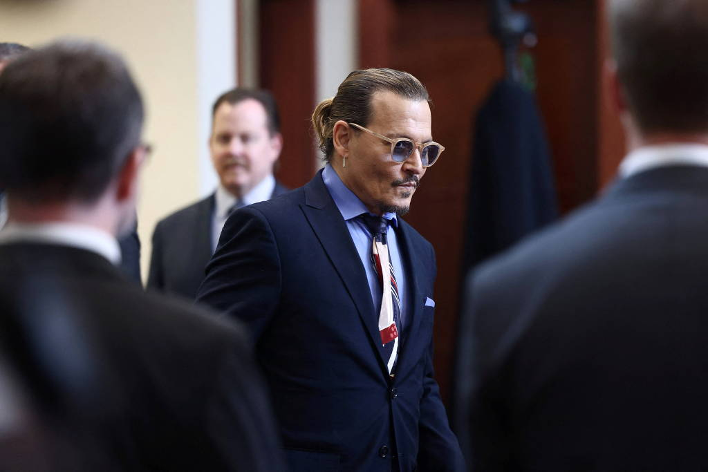

Julgamento de Johnny Depp e Amber Heard terá depoimento de irmã e ex-affair
Abaixo-assinado para tirar atriz de 'Aquaman' beira 4 milhões de assinaturas

O ator Johnny Depp durante julgamento nos Estados Unidos - REUTERS


12.mai.2022 ás 15h18
O julgamento do processo entre o ator Johnny Depp, 58, e sua ex-mulher, a atriz Amber Heard, 36, terá um hiato até a próxima segunda (16). de acordo com o The Independent, nessa data, a irmã de Amber, Whitney Henriquez, e a atriz Ellen Barkin, com quem Depp teve um breve relacionamento na década de 1990, serão ouvidos.
Depp também deverá ser ouvido mais uma vez na volta do julgamento, enquanto isso, uma petição online que recolhe assinaturas para uma possível retirada de Amber do filme "Aquaman 2", longa que deve chegar em 2023, já beira os 4 milhões de adeptos. segundo o Daily mail, a atriz, que interpreta mera no longa, terá menos de dez minutos de tela na próxima sequencia.
Depp, que já foi um dos maiores astros de Hollywood, disse que nunca bateu em Heard ou em qualquer mulher e que as alegações de Heard lhe custaram “tudo”. Um novo filme de “Piratas” foi suspenso e Depp foi retirado da franquia de filmes “Animais Fantásticos”, um spin-off de “Harry Potter”. Os advogados de Heard argumentaram que ela disse a verdade e que sua opinião estava protegida pela liberdade de expressão pela Primeira Emenda da Constituição dos EUA. Nos argumentos iniciais, os advogados de Heard disseram que Depp a agrediu física e sexualmente enquanto abusava de drogas e álcool.
Ler mais:

Após terminar depoimentos Depp divulga novos áudios com Amber Heard

A batalha juldicial de Depp e Amber volta os holofotes para suas carreiras

Johnny Depp diz que a ex-mulher Amber Heard era "violenta" com ele

Johnny Depp depoe novamente nesta segunda; saiba oq ele falou até aqui
Um juiz do tribunal estadual do condado de Fairfax, na Virgínia, está supervisionando o julgamento, que deve durar até o final de maio. Menos de dois anos atrás, Depp perdeu um caso de difamação contra o “The Sun”, um tabloide britânico que o rotulou de “espancador de esposas”. Um juiz da Suprema Corte de Londres decidiu que ele havia agredido Amber Heard repetidamente. Os advogados de Depp disseram que abriram o caso dos EUA no condado de Fairfax, fora da capital do país, porque o “Washington Post” é impresso lá. O jornal não é réu.
A equipe jurídica de Heard começou a apresentar seu caso nesta terça com o depoimento da psicóloga Dawn Hughes. Ela já testemunhou anteriormente como especialista em relacionamentos abusivos nos julgamentos do fundador do Nxivm, Keith Raniere, e do cantor R. Kelly, ajudando a garantir as duas condenações.
A testemunha final de Depp, o contador forense Mike Spindler, testemunhou nesta terça sobre uma análise dos valores que o ator teria perdido como resultado do editorial de 2018, que não mencionou o ator pelo nome.
 Tópicos
Tópicos
Amber Heard
Estados unidos
Hollywood
Johnny Depp
Tribunal